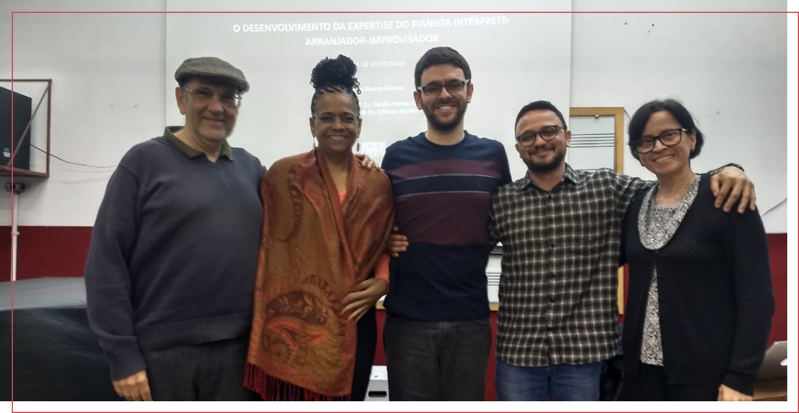

Pesquisa
Aqui você encontra toda a produção científica do GRUME das últimas décadas: nossa equipe atual de estudantes, as monografias resultantes de todas as orientações já concluídas sob a orientação do professor Danilo Ramos (níveis: iniciação científica, mestrado e doutorado) e todas as publicações do GRUME, que envolvem livros, capítulos de livros, artigos acadêmicos e apresentação de trabalhos nos principais congressos da área de cognição musical no Brasil e no mundo.
